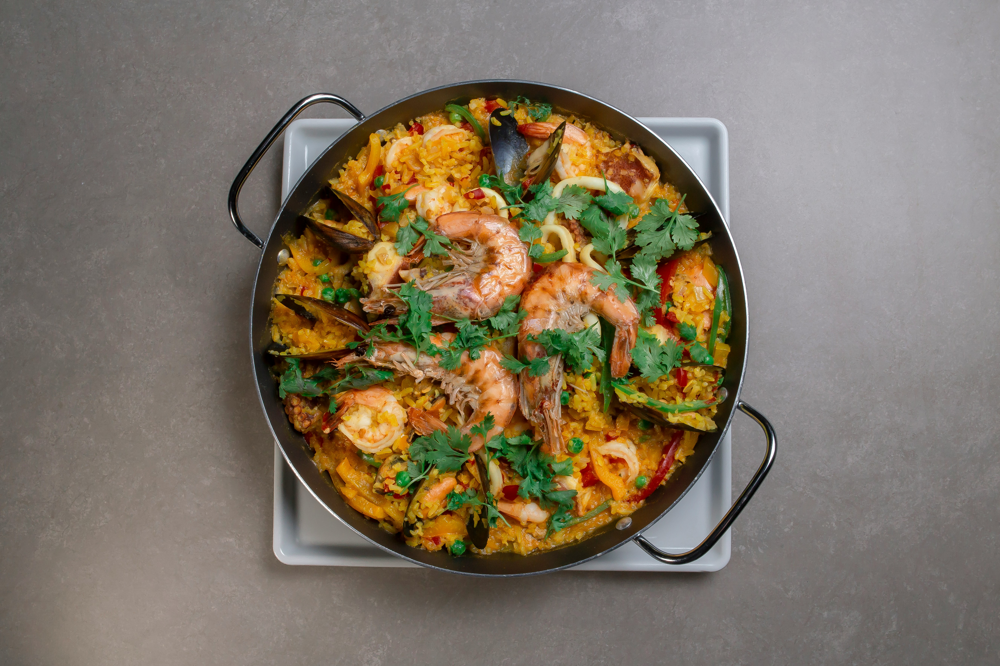
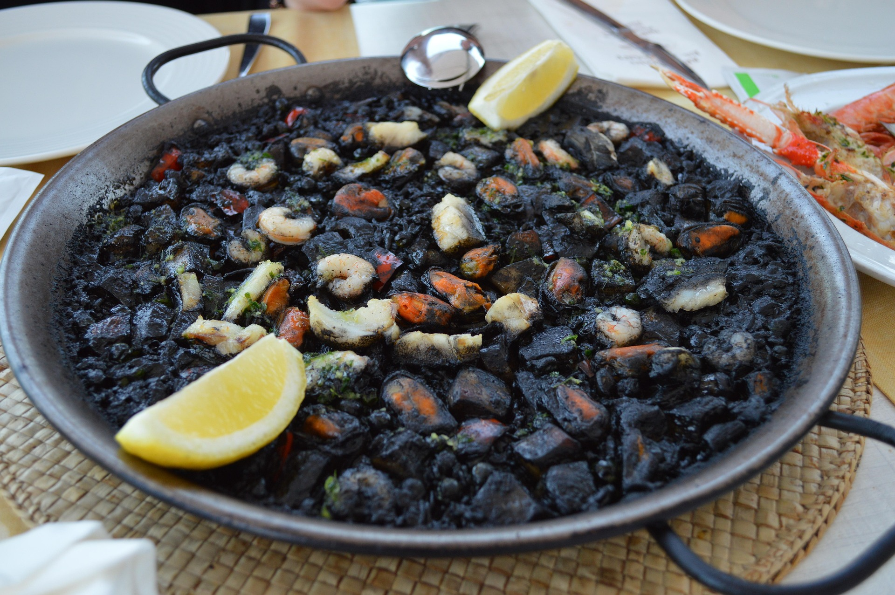
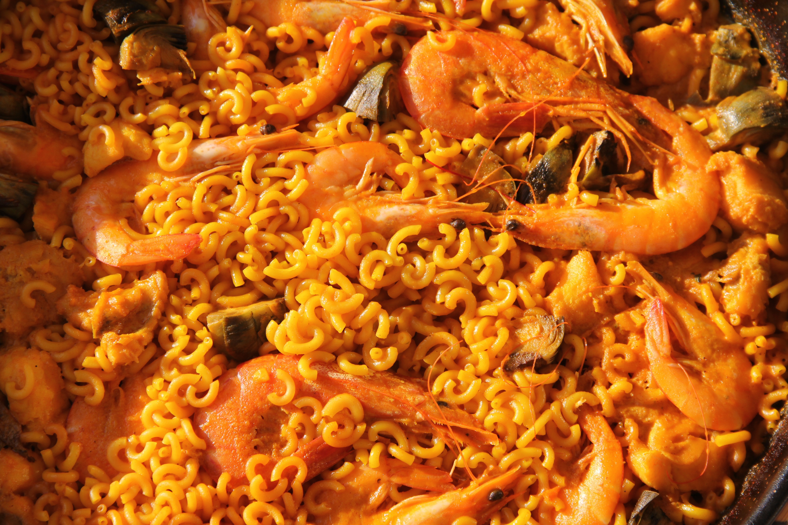
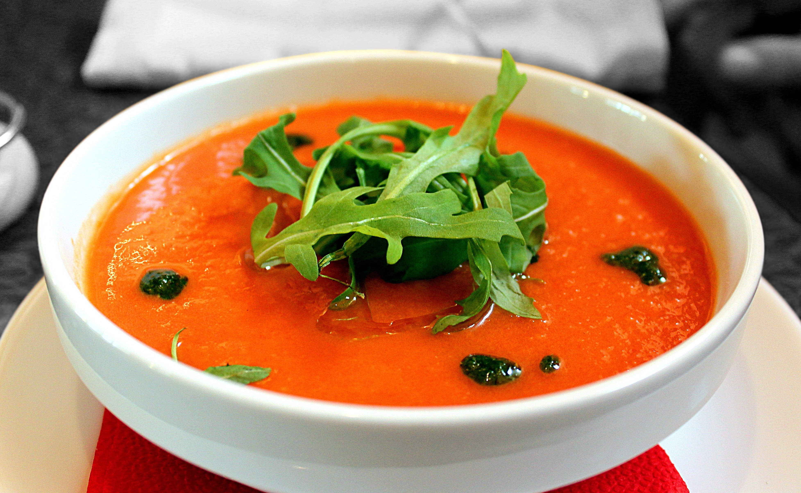

Paella valenciana tradicional

Paella valenciana tradicional

Risotto italiano de temporada

Arroz negro con sepia

Fideuà de marisco

Gazpacho con verduras frescas
Sopa francesa gratinada
Torrijas caseras

Tiramisú clásico italiano